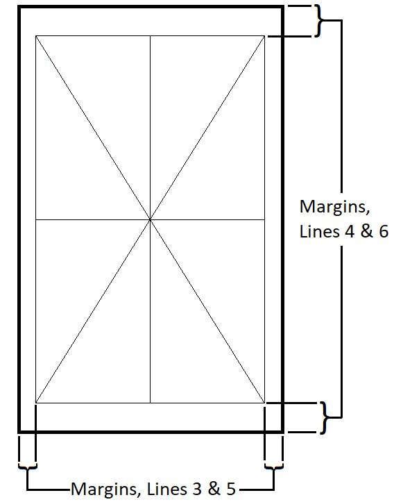

preparations
Consider the environment of the surface plate. A proper calibration must be performed without strong temperature deviations. Ideally a plate will not have experienced deviations of greater than 6 °F in the four hours prior to the calibration, and greater than 2 °F during the calibration process.
Clean the surface plate thoroughly with surface plate cleaner. You may find some from Starrett. Then clean it again. Plates that have rust spots may need a razor blade taken to them. Be sure the plate is dust-free by running your hand over the top until this is the case.
Perform a repeat reading with a device like a repeat-o-meter. This measurement simulates the footprint of a height gage and shows the local deviations possible at different spots on the surface plate. Move the repeat gage over the plate in a methodical way to cover most of the surface, keeping an eye on the gage. Avoid the outside two inches of the plate during this procedure.

Start with the gage at zero in one corner, in a cardinal direction, then move forward across the plate. Move over a few inches, then track back to the starting side. Move over a bit more until you have covered that whole direction. Rotate the gage 90°, and repeat scanning the surface. Then rotate 45°, repeat, rotate 90° again, and repeat, keeping track of your higest and lowest points. Check your zero by going to the very first spot. Subtract the lowest reading from the highest to find your plate's total repeat.
If a plate's repeat is not less than that listed in the desired grade's column, it will have to be lapped into spec, but take your flatness reading (as facilitated here) first. The flatness map will assist in a plan of attack for where to grind most.
Click Start and enter all information. If you cannot find a manufacturer's placard, or otherwise don't know, enter "Unknown" for manufacturer and serial. Enter the nearest inch for width and length.
Draw your lines using the margins provided, connecting opposite corners, and orthoganals exactly through the center point.